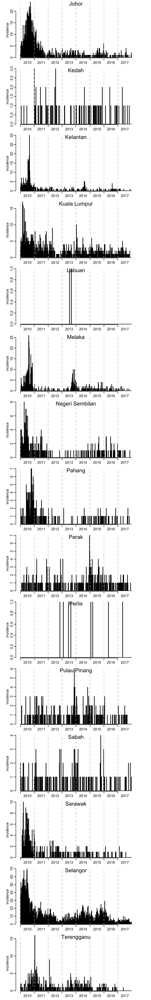
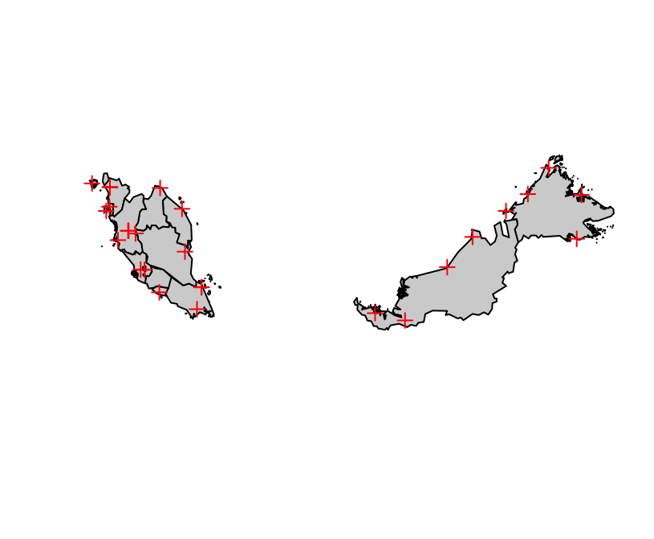

Data exploration
Incidence data
library(magrittr)Let’s get the dengue data:
dengue <- readr::read_csv("https://raw.githubusercontent.com/choisy/DMo2019/master/data/dengue.csv")## Parsed with column specification:
## cols(
## state = col_character(),
## year = col_integer(),
## week = col_integer(),
## incidence = col_integer()
## )You can split the data frame of incidences into a list of data frames, with one data frame per state as so:
dengue_by_state <- split(dengue, dengue$state)From which list you can extract whatever state you want:
dengue_data <- dengue_by_state$TerengganuLet’s define some coordinates to customize the \(x\)-axis:
ats <- dengue_data %>%
dplyr::group_by(year) %>%
dplyr::summarise(at = mean(week)) %>%
dplyr::ungroup() %$%
setNames(at, year) and
first_weeks <- which(dengue_data$week == 1) - .5The following function plots a chronologically-order vector of incidence from the list dengue_by_state:
plot_incidence <- function(x, ...) {
barplot(x, space = 0, axes = FALSE, xlab = NA, ylab = "incidence", ...)
axis(1, first_weeks, FALSE)
axis(1, ats + first_weeks, names(ats), tick = FALSE)
axis(2)
abline(v = first_weeks, lty = 2, col = "grey")
}Let’s use this function to plot the time series of incidence for all the states:
par(mfrow = c(15, 1))
for (state in unique(dengue$state)) {
plot_incidence(dengue_by_state[[state]]$incidence)
mtext(state, line = -1)
}
The same, but this time with the same range of values on the \(y\)-axis:
par(mfrow = c(15, 1))
for (state in unique(dengue$state)) {
plot_incidence(dengue_by_state[[state]]$incidence,
ylim = c(0, max(dengue$incidence)))
mtext(state, line = -1)
}
Geographic data
We can download maps of any country directly from the GADM website:
malaysia <- readRDS(url("https://biogeo.ucdavis.edu/data/gadm3.6/Rsf/gadm36_MYS_1_sf.rds")) %>%
sf::st_simplify(TRUE, .05) %>%
sf::st_geometry()## Warning in st_simplify.sfc(st_geometry(x), preserveTopology, dTolerance):
## st_simplify does not correctly simplify longitude/latitude data, dTolerance
## needs to be in decimal degreesHere, we also simplified a bit the maps, and extract the geometries only.
Climatic data
Downloading the climatic stations:
stations <- readr::read_csv("https://raw.githubusercontent.com/choisy/DMo2019/master/data/climatic%20stations.csv")## Parsed with column specification:
## cols(
## location = col_character(),
## station = col_integer(),
## longitude = col_double(),
## latitude = col_double(),
## elevation = col_integer(),
## from = col_integer()
## )Plotting the locations of the climatic stations:
library(sf) # for the "plot" method## Linking to GEOS 3.6.1, GDAL 2.1.3, PROJ 4.9.3plot(malaysia, col = "lightgrey")
plot(sf::st_as_sf(stations,
coords = c("longitude", "latitude"),
crs = "+proj=longlat +datum=WGS84 +no_defs +ellps=WGS84 +towgs84=0,0,0"),
add = TRUE, pch = 3, col = "red")## Warning in plot.sf(sf::st_as_sf(stations, coords = c("longitude",
## "latitude"), : ignoring all but the first attribute
Let’s now download the climatic data:
climate <- readr::read_csv("https://raw.githubusercontent.com/choisy/DMo2019/master/data/climate.csv")## Parsed with column specification:
## cols(
## station = col_integer(),
## day = col_date(format = ""),
## ta = col_double(),
## tx = col_double(),
## tn = col_double(),
## slp = col_double(),
## h = col_integer(),
## pp = col_double(),
## vv = col_double(),
## v = col_double(),
## vm = col_double(),
## vg = col_double(),
## ra = col_logical(),
## sn = col_logical(),
## ts = col_logical(),
## fg = col_logical()
## )